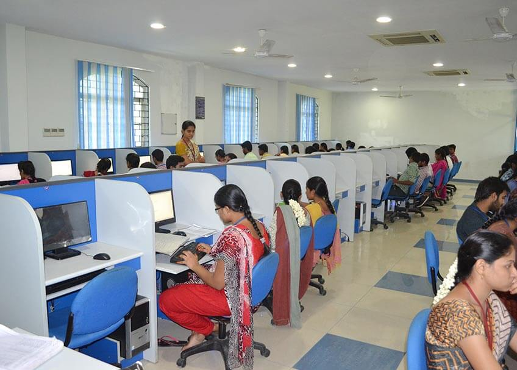
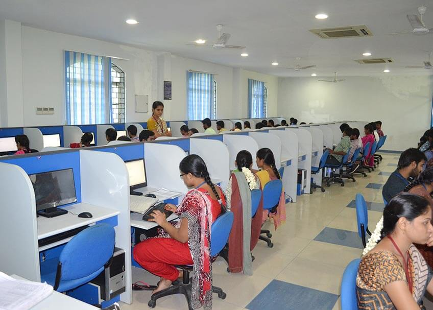

Approved by AICTE | Permanently Affiliated to JNTUK, Kakinada | Accredited with NAAC 'A' Grade | NBA Accredited B.Tech (CSE, ECE, ME) | An ISO 9001:2015 Certified Institute
Councelling Code
MICT
Approved by AICTE | Permanently Affiliated to JNTUK, Kakinada | Accredited with NAAC 'A' Grade | NBA Accredited B.Tech (CSE, ECE, ME) | An ISO 9001:2015 Certified Institute
Councelling Code
MICT

Engineering and science are, by their very nature, humanistic and socially derived enterprises. The Department of Basic Engineering plays an impact-creating role in an institute where the ethos of science and technology emerge. Hence a complete science and technology education must include subjects that help unite application of scientific principles with human, moral and social understanding. The subjects taught by this department are meant to sensitize students to the broader social, cultural, economic, ethical and humane issues involved in social change.
The Department of Basic Engineering was established in the year 2002. It provides a launch pad for the engineering study by teaching students the foundation courses in various subjects of science and humanities. The department also aims to provide knowledge in the vicinities of Mathematics, Physics, Chemistry, and Humanities to the students of engineering to set a strong foundation for respective core Engineering disciplines.
The faculty members of the department are fully slotted into research activities under various sponsored projects in collaboration with premier institutes and have been publishing research papers in journals of National and International repute.
The department has major core laboratories like Engineering Physics, Engineering Chemistry, and Computer-Aided Multimedia English Language that are fully equipped and play an indispensable role in students’ career.
To nurture excellence in the field of Engineering by imparting quality technical education, inculcating core values with skills, knowledge and behavior to the learners, promoting research and technical services with global competence to the societal requirements.
To provide state of the art infrastructure and instruction preparing the students professionally deft and intellectually adept. To provide the qualified and experienced teaching faculty to mould the learners to compete in contemporary technical world. To provide socio-ethical exposure and holistic attitude in preparing responsible and informed citizens to build the nation. To provide international standards in conducting research, offering technical services by cutting edge technologies to meet the current and future challenges of technological development.
| S.No | Name of the Laboratory |
|---|---|
| 1 | C Programming Lab |
| 2 | Python Lab |
| 3 | Data Structures Lab |
| 4 | IT Workshop Lab |
| 5 | Chemistry Lab |
| 6 | Physics Lab |
| 7 | Engineering Drawing |
| 8 | Engineering Workshop |
Computer Science and Engineering is a branch which imparts innovation and problem-solving skills through computational techniques and technologies. The most essential aspect of Computer Science is the skill of problem solving, an essential skill for life. Students study the design, development and analysis of software and hardware that could be used to solve problems in a variety of business, scientific and social contexts.
The Department of Computer Science and Engineering was established in the year 2002 with a total intake of 60 in B. Tech Computer Science and Engineering (CSE). The intake was increased to 120 in the year 2003 and subsequently to 180 in the year 2013. The department provides post graduate program, M. Tech Computer Science and Engineering (CSE) with an intake of 18. The department is offering a Diploma course in Computer Engineering with an intake of 60 from the year 2021. B. Tech., in Artificial Intelligence & Data Science (AI & DS) and B. Tech., in Artificial Intelligence & Machine Learning (AI & ML) were duly approved by the AICTE to be run from the year 2021.
The department is equipped with highly qualified and dedicated faculty members with minimum M. Tech qualification in Computer Science and Engineering to impart technical and research-based quality education and to develop innovative skills among the students and to enrich the academic activities through continual improvement in the teaching and learning processes. The faculty of the department has more than 100 research papers published every year (Scopus Indexed, Sci-Indexed, Peer Reviewed Journals with high impact factor) and they participate in various conferences/FDPs/Seminars/STTPs and Workshops.
The department has an MoU with EICT-IIT Kanpur to organise FDPs on the cutting-edge technologies. Six international conferences/FDPs/STTPs are organised by the department faculty. Many of our faculty were key contributors to curriculum development and enrichment. The faculty of the department is part of five in-house projects (MIC Fee Payment portal, Students Performance analysis, Examination Cell Automation, Organization Website and Green Book Automation) and one external project (Website for Conference – YUVA FOGSI SOUTH ZONE – 2018) as part of research and development cell.
The Department of Computer Science and Engineering has created an intensive teaching and learning experience through industry driven Curriculum.
During the last two decades, most of the students are placed in top notch companies like IBM, TCS, Tech Mahindra, Infosys, Wipro, HCL, Byjus, PwC, Steria(India) Limited, Maple Labs, Infer India Pvt., Ltd., Accenture, Yash Technologies, Mind Tree etc with a salary range from 1.5LPA to 6 LPA. The alumni of the department have reached great heights in life over the years.
The department was accredited by the National Board of Accreditation (NBA) for a period of 3 years for UG in 2016. It was reaccredited in 2019.
The vision of the department is to produce internationally competent professionals with sound technical knowledge, research skills and values to address current and future challenges of the industry, contributing to the transformation of the society.
👉 Impart quality education in computer science and engineering through innovative teaching and learning methodologies
👉 Conduct industry ready skill development programs to bridge the gap between academia and industry to produce competitive software technocrats.
👉 Promote research through state-of-the-art facilities and interaction with the industry.
👉 Inculcate values in the students to make them socially committed professionals
👉 PEO1:To produce proficient and competent Computer Science & Engineering graduates with a strong foundation in Science and Engineering and Technology to be successful in their professional careers.
👉 PEO2:To make graduates capable of acquiring technical knowledge using modern tools and technologies for design and development of real time applications.
👉 PEO3:To inculcate necessary managerial and soft skills that help develop entrepreneurship and leadership qualities so as to produce competent professionals with ethical values.
👉 PEO4:To prepare students for life-long leaning and proactive research
👉PO1: An ability to apply knowledge of basic sciences and mathematical foundation to enginneering problems (Engineering Knowledge).
👉PO2: An ability to analyze and solve the problems effectively with appropriate logical and analytical skills (Problem Analysis).
👉PO3: An ability to design, develop and test software systems by applying algorithmic principles and programming prowess (Design/Development of solutions).
👉PO4: An ability to interpret the data and amalgamate the information to provide solutions to real word problems (investigations).
👉PO5: An ability to acquire and apply the modern techniques and tools to comples engineering problems (Modern Tools).
👉PO6: An ability to develop computing solutions for public safety and legal issues to serve the needs of the society (Engineer and Society).
👉PO7: An ability to analyze the local adn global impact of computing discipline on environmental issues and sustainable development (Sustainability).
👉PO8: An ability to apply the ethical principles in engineering practice (Ethics)
👉PO9: An ability to work effectively on projects either individually or in teams (Team work).
👉PO10: An ability to communicate effectively in written and oral forms on technical as well as general aspects (Communication).
👉PO11: An ability to apply engineering and management principles for effective development of projects (Project Management).
👉PO12: An ability to recognize the need for lifelong leargning in the world of ever changing technology (Lifelong learning).
PSO1: An ability to develop mobile Applications and Web Applications to become industry ready engineers.
PSO2: An ability to apply computational knowledge and project development skills to develop innovative solutions using domain specific tools in the areas of Artificial Intelligence, Machine Learning, and Cloud Computing etc...
| S.No | Name of the Laboratory | List of Softwares |
|---|---|---|
| 1 | C Programming Lab | C, C++, Jdk1.8,
Visual Studio 2010, Oracle 11g, Tomcat, Jsdk, Net Beans 7.01, Windows 10, Ubuntu, Windows Server 2012, e-Swecha, Fedora, MS Office 2010, MySql IBM RSA ENT, Eclipse 4.2, RTool, Globerena ECSL, K-Van ECL. |
| 2 | English Communications Lab | |
| 3 | Hadoop & Big Data Lab | |
| 4 | Data Structures Lab | |
| 5 | Data Bases Lab | |
| 6 | Object Oriented Programming Lab | |
| 7 | Networking Programming Lab | |
| 8 | Multimedia & Modelling Lab | |
| 9 | System Programming Lab | |
| 10 | Project Lab | |
| 11 | Cloud Lab | |
| 12 | R&D Lab |

 

System Engineers Association of MIC (SEAMIC) is an association of student group activities which was inaugurated on 2nd September 2006 by Dr. T. Hanuman Chowdary, former IT Adviser to Government of Andhra Pradesh. The main thought of forming up of this association is that the students are found to be completely engaged with their academic studies and have no recreation to polish their skills and talents. Though there are so many built-in qualities in them, they were lagging behind in this competitive world, as they have no time to concentrate on such matters. As the students spend most of their valuable time in the college campus itself, they must be given a chance of providing themselves in front of the experienced persons.
Hence that gave rise to a thought of making "The buds flower up with their fragrance", which could be made possible with this association called "SEAMIC" with its motto "Destiny Through Innovation".
The main theme of formation of student group is to make them active, be aware of all the latest trends and competitions that arise in the academics and other activities. The outcome of which is to make them competent and all-time outstanding achievers. The overall concentration is in improving their communication skills, self-management of tasks, making them bold enough to face the competitive world, making them gain excess knowledge other than book-knowledge and finally to make them build-up brotherhood relations in public.
This association is mainly comprised of students. This is because students should be able to learn many issues like managing and doing tasks other than what they regularly study in classrooms. The whole program planning, organization and the participations are taken over by the students under proper guidance of the faculty members. A student body - the representatives of different aspects are selected and guided by the faculty to carry out the whole program implementation.
The members and the faculty of the CSE Department are confident to achieve the theme of the association as we have already proved that our students are so talented as they were able to initiate themselves in sketching out the Logo of the association that depicts "A human empowering the knowledge of Computers". Also the motto and title of the association are being selected from a list of competing entries that were collected from the students. Though it takes some time to achieve the target, we assure that we have made up a path that leads them towards the destiny through their innovations.
Different activities that come under SEAMIC to make the students skilled and talented around the general and technical aspects are:
👉 Seminars
👉 Debates
👉 Extempore
👉 Quiz
👉 Group Discussions
👉 IQs
👉 Team-Oriented technical tasks (Practical)
👉 Current Affairs
👉 Cultural Activities
👉 Guest Lectures by Subject Matter Experts (SMEs).
👉 Carrer Guidance by Resource Persons.
👉 Management Skills by Resource Persons.
👉 Workshops.
👉 Techno fests.
👉 Trail Lecturers by skilled Senior Students.
As it is the initiation of SEAMIC - the inaugural function is being carried out at first. Every academic year, an opening function of SEAMIC is being conducted along with the schedule of the Fresher’s Day and all the above-mentioned activities are carried out among students throughout the year, depending on the academic schedule. At the end of the academic year, a closing function is being conducted along with the schedule of Farewell Party in which all the winners of the competitions will be given prizes.
The main objectives that incorporate the activities of SEAMIC, which leads to the success of students, are:
👉Encouraging the students and improving their confidence level.
👉Extracting the hidden skills of the talented students in general and technical aspects.
👉Improving the Communication Skills, Self-Management Skills and Discipline etc.
👉To affirm the roots of continuous learning process and to make them aware of all the new trends.
👉Upgrading on the latest issues in IT & real world.
👉Practically making them understand the competitions in the real world.
👉Inculcating the humanly and brotherly relations in them to deal with the public.
👉Brushing up their application skills through practical knowledge.
👉To make them get into immediate employment after their course completion.
👉To make them succeed in the Campus Selections and to route up their better future.
👉To find the students who have research-oriented skills and training them on interested areas through proper guidance.
👉To bring out the creativity of the students.
👉Finally, to make them all-rounder’s in all aspects.
Civil Engineering is a broad field of engineering that deals with the planning, construction, and maintenance of fixed structures, or public works, as they are related to earth, water or civilization and their various processes.
The Department of Civil Engineering since its inception in 2012 has been at the forefront of teaching, research and consulting with a focus on the broad areas of Geotechnical, Structural, Transportation Systems, Hydraulics and Water Resources and Environmental Engineering.
Our faculty members are committed to delivering knowledge and expertise in the broad spectrum of Civil Engineering and are actively involved with research that caters to societal needs in general. Our students are actively involved in several internships and projects and our main aim is to evolve them into confident individuals, ready to make an impact on whatsoever profession (industrial work, research, entrepreneurship) they choose to pursue.
Our research in the department focuses on both fundamental and applied research to provide solutions that help drive the future evolution of Civil Engineering. Industry interaction and academic exchanges are an integral characteristic of our department.
Our alumni have gone on to serve in distinguished capacities in various industries, Government organizations and institutions in India and abroad.
To impart knowledge and excellence in Civil Engineering and Technology with global perspectives to our students and to make them ethically strong engineers to build our nation
👉 To reinforce the students with fundamental engineering knowledge and broad set of skills.
👉 To make the department a center of excellence in the field of Civil Engineering and allied Research.
👉 To Provide knowledge base and consultancy services to the community in all areas of Civil Engineering.
👉 To Promote innovative and original thinking in the minds of budding engineers to face the challenges of future.
PEO1: To proviede the graduates with the fundamental knowledge for successful in the field of civil engineering.
PEO3: To serve society with professional ethics adn integrity.
PO1: Engineering Knowledge: An ability to apply knowledge of mathematics, science, and engineering.
PO2: Problem analysis An ability to design and conduct experiments, as well as to analyze and interpret data.
PO3: Design/Development fo solutions: An ability to design a system, component, or process to meet desired needs within realistic constraints such as economic, environmental, social, political.
PO4: Investigations of complex problems: An ability to function on multidisciplinary teams.
PO5: Modern tool usage: An ability to use the techniques, skills and modern engineerigng tools necessary for engineering practice.
PO6: The engineer and society: An ability to understand the impact of engineering solutions in a global, economic, environmental and societal context.
PO7: Environment and sustainability: An ability to communicate effectively.
PO8: Ethics: An understading of professional and ethical responsibility.
PO9: Individual and team work: An understading of critical issues for professional practice such as the procurement of work and the interaction with contractors during the construction.
PO10: Communication: Knowledge of contemporary issues.
PO11: Project management and finance: An ability to identify, formualte and solve engineering problems.
PO12: Lefe-long learning Recognition of the need for and an ability to engage in life-long learning.
PSPO1: Plan, analyze, design, prepare cost estimates and execute all kinds of Civil Engineering Projecrts.
PSPO2: Apply modern constructions techniques, equipment and management tools so as to complete the project within specified time and funds.
| S.No | Name of the Lab |
|---|---|
| 1 | Surveying Field Work -I |
| 2 | Strength of Materials Lab |
| 3 | Concrete Technology Lab |
| 4 | Surveying Field Work –II |
| 5 | Fluid Mechanics & Hydraulic Machinery Lab |
| 6 | Geotechnical Engineering Lab |
| 7 | Engineering Geology Lab |
| 8 | Transportation Engineering Lab |
| 9 | Computer Aided Engineering Drawing Lab |
| 10 | Environmental Engineering Lab |
| 11 | GIS & CAD Lab |


ALLIANCE OF CIVIL ENGINEERING TECHNOLOGY (ACET) is an association of student group which was inaugurated on 11th March 2016 by Mr. M Satyanarayana Rao, DEE (R&B), Jagayyapeta.
The objectives of the Alliance of Civil Engineering Technology (ACET) a student body of the Civil Engineering Students of DVR & Dr HS MIC College of Technology, Kanchikacherla is to:
👉 Promote students’ academic, professional and other activities of mutual interests through wider, regular and frequent exchange of views among students, faculty/staff members, and industry related professionals.
👉 Establish close link with other institution/organization/industry and academic disciplines to promote mutual cooperation and to facilitate multidisciplinary research approach.
👉 Provide a common forum for students to develop their presentation skills and advance their research activities.
The association aims to achieve the above objectives by providing the much-needed practical exposure to the community members through its regular activities like technical seminars, research symposia, talks on ongoing research practices throughout the globe and many other related topics from distinguished practitioners of the trade. Collaboration between academics and industry is important for the advancement of engineering teaching and research. With this aim, to give our students some practical insight into Civil Engineering, the students’ association plans to organize several visits throughout the year to ongoing construction sites thus giving them a chance to interact with key personnel of the industry.
ACET also plans to provide a platform to budding civil engineers across the country to create, innovate and learn various aspects of civil engineering through competitions, events and Symposia (research paper conference).
Electronics and Communication Engineering is concerned with the design, development, manufacture and application of electronic devices, circuits, and systems. Electronics and Communication Engineering lays greater emphasis on deep understanding of fundamental principles and state-of-the-art knowledge about Electronic Devices and Circuits, Computer Architecture and Microprocessors, VLSI and Embedded systems, Electromagnetic Field Theory, Analog and Digital Communication, Digital Signal Processing, Microwave and Broadband Communications.
The Department of Electronics and Communication Engineering (ECE) was established in the year 2002 to meet the needs of the emerging industry and research. The main focused areas of the department are Signal and Image Processing, Wireless Communication, VLSI Design and Embedded Systems, Antenna Theory and Design. The department was accredited by National Board of Accreditation (NBA). The department has MoUs with leading Industries. The department has well-qualified and experienced faculty with a healthy student to staff ratio of 15:1. The list includes Doctorates, faculty pursuing PhD and the remaining are Post-Graduates.
The department provides opportunities to students to work on various projects, develop communication skills, explore internship opportunities in industry and take part in national and international design contests. The Department has a number of well-equipped laboratories and provides excellent facilities for learning. The Department periodically organizes seminars, symposia, workshops and guest lecturers for the benefit of both the students and the faculty. The department has entered into an MoU with BSNL, Indian Railways, MIC Electronics, and Microlinks.
Most of the students are placed in companies like MIC Electronics, Efftronics, TCS, Tech Mahindra, Infosys, Wipro, HCL, Byjus, Accenture etc with a salary range from 1.5 LPA to 5 LPA. The alumni of the department have reached great heights in life over the years.
The department is accredited by the National Board of Accreditation (NBA) for a period of 3 years for UG in 2016. It is reaccredited in 2019.
To create globally competent professionals in the field of engineering, imparting excellent teaching, research environment, collaborative activities and techno-services for real world applications.
👉To Educate and empower the students with latest trends in electronics and communication engineering to meet the growing real world challenges.
👉To impart quality education with experienced and qualified teaching faculty.
👉To inculcate professional ethics and morals in preparing responsible citizens.
👉To carry out research and development and collaborative activities.
PEO 1: To acquire cognizant fundamental knowledge in subjects like Basic Sciences, Engineering Mathematics & Engineering Sciences.
PEO 2: To impart technical knowledge using modern tools in order to develop products for societal needs.
PEO 3: Enabling Graduates for Technical Organizations by providing soft skills and Technical Knowledge.
PEO 4: To inculcate Research Aptitude so as to Engage in lifelong learning with Ethical and Holistic attitude.
PO1: Graduates will be able to apply the principles of basic sciences, mathematics, and engineering fundamentals in finding solutions to complex problems.
PO2: Graduates will acquire critical thinking skills, problem solving abilities, and familiarity with the computational procedures essential to the field.
PO3: Graduates will be able to design various types of systems required for technical advancements and societal needs.
PO4: Graduates will be able to use research based knowledge to conduct experiments and interpret experimental data.
PO5: Graduates gain hands on experience in using latest software and hardware tools for obtaining solutions to engineering problems.
PO6: Graduates will be able to apply their knowledge to tackle societal, health, safety, legal and cultural issues.
PO7: Graduates will possess adequate knowledge required for technological development keeping in view environmental effects and real time problems.
PO8: Graduates will have professional ethics and the culture of practicing the established norms of engineering.
PO9: Graduates will acquire the capability of working productively as individuals, as members or leaders in diverse environment.
PO10: Graduates will be able to articulate their ideas clearly with excellent soft skills and prepare technical reports.
PO11: Graduates will acquire knowledge required for project and finance management.
PO12: Graduates will have ability to engage in lifelong learning to keep abreast of ever changing technology.
PSO1: Enable students to apply concept of Electronic and Communication Engineering for designing and testing various electronics module in the area of Communication, Networking, Signal and Image Processing, Embedded System, VLSI and Control system.
PSO2: Enriching an ability to solve complex real time problems related to Electronic and Communication Engineering with significant technical and analytical knowledge using modern tools.
PSO3: Acquaintance of societal needs, environment, health and safety with ethical attitude to serve as a good professional and person.
| S.No | Name of the Laboratory |
|---|---|
| 1 | Electronic Devices & Circuits Lab |
| 2 | Electronic Circuit Analysis Lab |
| 3 | Analog Communication Lab |
| 4 | Digital Communication Lab |
| 5 | Linear IC Applications Lab |
| 6 | Digital System Design & DICA Lab |
| 7 | Pulse & Digital Circuits Lab |
| 8 | Digital Signal Processing Lab |
| 9 | Micro Processors & Micro Controllers Lab |
| 10 | VLSI Lab |
| 11 | Microwave Engineering & Optical Communication Lab |
| 12 | Embedded Systems Lab |

Department of ECE is organizing student Association activities every semester. The Department periodically organizes seminars, symposia, workshops and guest lectures for the benefit of both the students and the faculty. Seminars will be conducted every week as per the given schedule. Students are trained up for campus recruitments through Finishing School Programme classes i.e., Aptitude, Verbal, and Soft Skills. In every academic year, department of ECE organizes National Level Symposium like “Techno Spark”student activity in terms of Working Model Exhibition. The department has Memorandum of Understanding (MOUs) with organizations like South Central Railway, MIC Electronics, Micro Links. ECE department is encouraging all the faculty and students towards professional body memberships and activities. The department has ISTE, IETE and IEEE student chapters.
Department of ECE releases a half yearly news letter named "ECE PULSE" with 'the heartbeat of innovation' as its tagline.
columns:
👉 Seminars / Workshops.
👉 Faculty Achievements.
👉 Student Achievements.
👉 Role of honour for the best students.
👉 Inspiring Quotes.
👉 Puzzles.
Electrical & Electronics Engineering deals with the engineering problems, opportunities and needs of electrical, electronics, computer, telecommunication systems and related industries. This branch provides students with a wide range of fundamental knowledge in core disciplines such as communications, control systems, signal processing, radio frequency design, micro-processors, micro-electronics, power generation and electrical machines.
The Department of Electrical and Electronics Engineering at DVR & Dr. HS MIC College of Technology was established in 2002. The department was started with the under-graduate program in 2002 and later on in 2013, Diploma program was added. The post-graduate program in Power Electronics & Electric Drives was started in the year 2009.
The undergraduate program in Electrical and Electronics Engineering at MIC offers a mix of electrical, electronics and computer related courses empowering the students to take up professional career / higher studies in any of these areas. The curriculum based on credit scheme is updated periodically to contemplate changes in the electrical and electronics profession in consultation with experts from industries and renowned institutions.
The EEE department at MIC has faculty members specialized in all important areas of Electrical and Electronics Engineering such as Power System, Power System Control and Automation, Power Electronics And Drives, and Control System. The department has experienced faculty which includes doctoral degree holders, Ph.D. scholars besides other faculty with M.Tech., qualification.
The department has well-equipped state-of-the-art laboratories to augment the coursework and enhance the research potential. In addition to the regular programmes, this department is also actively involved in conducting faculty development programmes, job-oriented short-term training programmes for engineering professionals and academic faculty.
The department entered into an MoU with Sudhakar Polymers Ltd., G.S Electricals, South Central Railways, and MIC Electronics. The department was accredited by the National Board of Accreditation (NBA) for a period of 3 years for UG in 2016.
To be a hub of globally competent engineers equipped with knowledge, skills and behaviour for their exemplary contributions to the real time requirements in the field of electrical and electronics engineering.
👉 To impart technical knowledge to the learners and make them globally competent through the state of art laboratories and instruction by highly qualified and experienced faculty.
👉 To inculcate industry oriented learning by frequent industrial visits, MOUs, internships and make them technically strong power engineers.
👉 To produce robust professionals with a wide repertoire of managerial & technical skills, ethical values and make them successful in meeting the needs of the society.
PEO1: To provide students, a strong foundation in core areas of Electrical engineering along with engineering mathematics, sciences and usage of modern tools to make them globally competent in designing, modeling and critical problem solving.
PEO2: To create research interest in core and multi disciplinary areas for lifelong learning and provide solutions to engineering problems for sustainable development of society.
PEO3: To bring in holistic growth of the graduates by inculcating socio-ethical values, communication and life skills.
PEO4: To strive for getting employment or higher education and be able to work in supportive and leadership roles.
Engineering Graduates will be able to:
PO1: Engineering knowledge: Apply the knowledge of mathematics, science, engineering fundamentals, and an engineering specialization to the solution of complex engineering problems.
PO2: Problem analysis: Identify, formulate, review research literature, and analyze complex engineering problems reaching substantiated conclusions using first principles of mathematics, natural sciences, and engineering Sciences
PO3: Design/development of solutions: Design solutions for complex engineering problems and design system components or processes that meet the specified needs with appropriate consideration for the public health and safety, and the cultural, societal, and environmental considerations.
PO4: Conduct investigations of complex problems: Use research-based knowledge and research methods including design of experiments, analysis and interpretation of data, and synthesis of the information to provide valid conclusions.
PO5: Modern tool usage: Create, select, and apply appropriate techniques, resources, and modern engineering and IT tools including prediction and modeling to complex engineering activities with an understanding of the limitations.
PO6: The engineer and society: Apply reasoning informed by the contextual knowledge to assess societal, health, safety, legal and cultural issues and the consequent responsibilities relevant to the professional engineering practice.
PO7: Environment and sustainability: Understand the impact of the professional engineering solutions in societal and environmental contexts, and demonstrate the knowledge of, and need for sustainable development.
PO8: Ethics: Apply ethical principles and commit to professional ethics and responsibilities and norms of the engineering practice.
PO9: Individual and team work: Function effectively as an individual, and as a member or leader in diverse teams, and in multidisciplinary settings.
PO10: Communication: Communicate effectively on complex engineering activities with the engineering community and with society at large, such as, being able to comprehend and write effective reports and design documentation, make effective presentations, and give and receive clear instructions.
PO11: Project management and finance: Demonstrate knowledge and understanding of the engineering and management principles and apply these to one’s own work, as a member and leader in a team, to manage projects and in multidisciplinary environments.
PO12: Life-long learning: Recognize the need for, and have the preparation and ability to engage in independent and life-long learning in the broadest context of technological change.
PSO1: An ability to interpret, analyze and design Electrical Machines, Control Systems, Power Systems and Power Electronic Systems.
PSO2: An ability to use modern tools to analyze and design Electrical and electronic systems for providing Engineering solutions in societal and environmental contexts.
| S.No | Name of the Lab |
|---|---|
| 1 | Electrical Machines-I Lab |
| 2 | Electrical Machines-II Lab |
| 3 | Electrical Technology Lab |
| 4 | Electrical Measurements Lab |
| 5 | Electrical Circuits Lab |
| 6 | Electronic Devices & Circuits Lab |
| 7 | Power Electronics Lab |
| 8 | Control Systems Lab |
| 9 | Electrical Drives Lab |
| 10 | Electrical Simulation Lab |
| 11 | Microprocessor & Micro Controllers Lab |
Department of EEE offers a vibrant and active student life with several opportunities being provided for co-curricular and extra-curricular activities to nourish and develop their innate talents. It believes that professional knowledge should invariably be matched with professional growth of the students. The emphasis is given on not only making the students academically brilliant, but true leaders and team players, thus preparing them for the real life corporate world. In view of that the Department of EEE launched an association E-Zone. Electrical Zone of neoteric Engineers (E-Zone) is an Association of Electrical and Electronics Engineering students group inaugurated on 8thFebruary, 2008 by Sri A.Srinivasa Rao Garu, Vice President (projects) LANCO, Kondapally.
Activities are carried out by the Department Association along with Professional bodies like IE(I)-Institution of Engineers (India), ISTE- Indian Society for Technical Education, IEEE- Institute of Electrical and Electronics Engineers to enhance the technical knowledge of students.
The main idea behind this E-zone is to make the students aware of the latest trends and technologies in the field of Electrical Engineering.
To represent and support an inclusive and vibrant student community in which members have the opportunity to expand their horizons, reach their full potential and change the world around them.
1. To encourage greater participation of students in various academic, cultural and social activities and to develop healthy co-curricular and extra- curricular activities.
2. To encourage innovative thinking and creativity and inculcate research skills in our students.
3. To supplement and enrich the existing curriculum through seminars and extension lectures by eminent scholars.
4. To support the exchange of knowledge between industry and academy.
5. To provide higher/continued education and research opportunities to faculty as well as students.
6. To improve satisfaction level of all students and faculty.
7. To provide an ambience that makes our students ethically strong and professionally competent and thereby, contributing to a healthy and prosperous society.
8. To optimize the use of available infrastructure for sustained development of the college.
Workshops, seminars, Guest lectures, Faculty Development Programs, Industrial Visits and other Co-circular & Extra circular activities.
Information technology is the study, design, development, implementation, support or management of computer-based information systems—particularly software applications and computer hardware.
According to Oxford Advanced Learner’s Dictionary, Information Technology is “the study or use of electronic equipment, especially computers, for storing, accessing, analysing and sending information”.
👉 The students choosing this field have to deal with many things like the infrastructure, development, storage, processing, and networking of devices apart from exchanging various forms of electronic data and its security. In fact, security has become a major threat to the future of IT. The stupendous role of Information Technology is well reflected in multi-national corporations, large-cap, mid-cap and small-cap businesses and in a plethora of works like management of data, inventory, customer relationship, Information Systems etc. Some of the most popular and mind-boggling ideas which are running on the wheels of IT are:
👉 Social Media Networking
👉 Patient Portals
👉 Digital Marketing
👉 Mobile Applications
👉 Website Applications
👉 Online Shopping Portals
👉 Internet Banking
In DVR & Dr. HS MIC College of Technology, the department of Information Technology was established in the year 2017 with a total intake of 60 students.
The department enjoys the erudite expertise of highly qualified and dedicated faculty members to impart technical and research-based quality education and to develop innovative skills among the students and to enrich the academic activities through continual improvement in the teaching and learning process. The department also focuses on infusing confidence in the minds of students and to develop them as entrepreneurs. The students are trained with cutting-edge technologies through Seminars, Workshops, Guest Lectures, and Working Model Exhibition etc.
To Empower graduates to become globally renowned computing innovators by providing theme with leading technologies in information technology
👉Offereing a rigorous and innovative curriculum that is alligned with the latest industry trends. 👉Providing students with access to state-of-the-art facilities and equipment. 👉Hiring experienced and qualified faculty who are passionate about teaching and research.
👉PEO1: Empower graduates to become globally recognized IT professionals who use thier knowledge and skills to solve complex real-world problems.
👉PEO2: Equip graduates to lead the development and adoption of new IT technologies.
👉PEO3: Instill a lifelong learning mindset and commitment to continuous professional development and innovation in graduates.
👉PEO4: Cultivate ethical and responsible IT professionals who use their skills to amke a positive impact on the world.
👉PO1: An ability to apply knowledge of basic sciences and mathematical foundation to enginneering problems (Engineering Knowledge).
👉PO2: An ability to analyze and solve the problems effectively with appropriate logical and analytical skills (Problem Analysis).
👉PO3: An ability to design, develop and test software systems by applying algorithmic principles and programming prowess (Design/Development of solutions).
👉PO4: An ability to interpret the data and amalgamate the information to provide solutions to real word problems (investigations).
👉PO5: An ability to acquire and apply the modern techniques and tools to comples engineering problems (Modern Tools).
👉PO6: An ability to develop computing solutions for public safety and legal issues to serve the needs of the society (Engineer and Society).
👉PO7: An ability to analyze the local adn global impact of computing discipline on environmental issues and sustainable development (Sustainability).
👉PO8: An ability to apply the ethical principles in engineering practice (Ethics)
👉PO9: An ability to work effectively on projects either individually or in teams (Team work).
👉PO10: An ability to communicate effectively in written and oral forms on technical as well as general aspects (Communication).
👉PO11: An ability to apply engineering and management principles for effective development of projects (Project Management).
👉PO12: An ability to recognize the need for lifelong leargning in the world of ever changing technology (Lifelong learning).
PSO1: Design, develop and test software systems to provide solutions to real world problems.
PSO2: Make sense of data by organizing, analysing, and interpretigng it to extract valuable insights.
| S.No | Name of the Laboratory | List of Softwares |
|---|---|---|
| 1 | C Programming Lab | C, C++, Jdk1.8, Oracle 11g, Tomcat, Jsdk, Net Beans 7.01, Windows 10, Ubuntu, Windows Server 2012, e-Swecha, Fedora, MS Office 2010, MySql IBM RSA ENT, Eclipse 4.2, RTool, Globerena ECSL, K-Van ECL. |
| 2 | English Communications Lab | |
| 3 | Hadoop & Big Data Lab | |
| 4 | Data Structures Lab | |
| 5 | Data Bases Lab | |
| 6 | Object Oriented Programming Lab | |
| 7 | Networking Programming Lab | |
| 8 | Multimedia & Modelling Lab | |
| 9 | System Programming Lab | |
| 10 | IOT Lab |
Mechanical Engineering is one of the major activities in the engineering profession and its principles are involved in the design, study, development, and construction of all the physical devices and systems. Continued research and development in Mechanical Engineering have led to the creation of better machines and processes helping the mankind.
The Department of Mechanical Engineering at DVR & Dr. HS MIC College of Technology is as old as the Institute itself. Its impact on the institute and on society is easily demonstrated by noting the alignment of the department's evolution with key events and technological advances in India and elsewhere.
The students in the department are exposed to the problems faced by today’s societies and are trained to address those problems through innovative thinking strategies to develop appropriate technological solutions. They endeavour to provide solutions to the practical problems. The faculty members of the department drive these activities through their teaching and diverse research programs covering numerous facets of Mechanical Engineering and its applications. In addition to the regular academic work, the students of the department are encouraged to participate in co-curricular activities. The department has evolved over time to keep up with the ever-increasing challenges in technology development, while maintaining a strong base in the fundamental aspects of Mechanical Engineering. While much of today’s research in Mechanical Engineering is of interdisciplinary nature requiring knowledge from numerous other science and engineering disciplines, the research work of the faculty members of the department is categorized into three broad streams viz., Thermal Engineering, Design Engineering, and Manufacturing Engineering, among others.
The department was accredited by the National Board of Accreditation (NBA) for a period of 3 years for UG in 2016. It was reaccredited in 2019. The department has entered into MoUs with leading Industries like CADD Experts, Vijayawada; Sudhakar Polymers Limited, Suryapet; Vasantha Hydraulic Systems, Hyderabad; Harsha Liners Pvt.Ltd., and AP Leaf Springs Pvt.Ltd., among others.
To produce world class mechanical engineers by imparting quality technical education and promoting research to meet current and future challenges for industrial development and make them responsible citizens.
👉 To create conducive environment for high quality teaching and learning thereby facilitating the students acquire sound fundamental principles of engineering for higher studies and professional career.
👉 To attain synergy in teaching and real world problems with industry interaction by having MOUs.
👉 To nurture students with a global outlook for sustainable development.
👉 To produce engineers with high moral and ethical values.
PEO1: To make students acquire comprehensive knowledge of mathematics, basic sciences and humanities in addition to strong concepts in Mechanical Engineering.
PEO2: To enable graduates, develop expertise and insight in core areas like mechanical design, thermal engineering, materials and manufacturing science to solve any application oriented problem.
PEO3: To develop the attitude among students for life-long learning through self-study, research and innovation.
PEO4: To make the learners well informed citizens with good communication skills and ethical values
PO1: Able to apply the basic knowledge of mathematics, science, engineering fundamentals and comprehensive knowledge of thermal, design and manufacturing engineering to solve complex engineering problems. [Engineering Knowledge].
PO2: Able to identify, formulate and solve mechanical engineering problems using principles of engineering sciences, mathematics and appropriate engineering standards. [Problem Analysis].
PO3: Able to design mechanical systems/components as per engineering standards to meet desired specifications and requirements with suitable consideration for economy, environment and safety norms. [Design and development of Solutions].
PO4: Able to conduct investigations by analyzing and interpreting data using tools, techniques and research to find solutions for complex engineering problems. [Investigation].
PO5: Able to model, simulate and analyze engineering problems using modern tools. [Modern Tool].
PO6: Able to understand responsibilities associated with the use of technology and processes on societal & legal issues of concern in respect of health, safety and culture. [Engineer and Society].
PO7: Able to understand contemporary issues in sustainable development and in providing technological solutions considering impact of socio-economic and environmental aspects. [Environment and Sustainability].
PO8: Able to understand and implement ethical and professional responsibilities in engineering practice. [Ethics].
PO9: Able to function effectively, as a member or team leader, in executing projects under multidisciplinary environments. [Team Work].
PO10: Able to communicate effectively in written, oral and graphical forms and present the results in a professional manner. [Communication].
PO11: Able to apply knowledge of engineering and management principles for effective project and finance management. [Project Management].
PO12: Able to recognize the need for lifelong learning and adapt to latest technological developments. [Life Long Learning].
PSO1: Identify, Formulate and Analyze complelex Engineering problems in Thermal Engineering, Design Engineerign and Manufacturing Engineerign domians.
PSO2: Ability to apply and interpret the acquired Mechanical Engineering knowledge for advancement in social, economical and environmental fields.
| S.No | Name of the Laboratory |
|---|---|
| 1 | Engineering Work shop |
| 2 | Fluid Mechanics & Hydraulic Machines |
| 3 | Mechanics of Solids Lab |
| 4 | Machine Tools Lab |
| 5 | Thermal Engineering Lab |
| 6 | Production Technology Lab |
| 7 | Fuels & Lubricants Lab |
| 8 | Metrology Lab |
| 9 | Instrumentation Lab |
| 10 | Metallurgy Lab |
| 11 | Heat Transfer Lab |
| 12 | Mechanical Computing Lab (CAD/CAM) |
| 13 | Theory of Machines Lab |
The purpose of the MIC Association of Mechanical Engineers (MICAME) is to represent current graduate students with in the Mechanical Engineering department at Devineni Venkata Ramana & Dr Hima Sekhar MIC College Of Technology. Our goal is to organize social and professional activities which strengthen and enrich the community within the department, and to help publicize various research activities within the department. We organize social hours, host talks by guest speakers and students, and help communicate with the department and the Graduate Student Council.
We encourage all current Mechanical Engineering graduate students to come forward and participate in the group. Members along with the MICAME officers play important roles in many of MICAME's initiatives, activities, and student advocacy issues.
MIC ASSOCIATION OF MECHANICAL ENGINEERS is an association by the students of the department of Mechanical Engineering, DEVINENI VENKATA RAMANA & Dr. HIMA SEKHAR MIC COLLEGE OF THECHNOLOGY, KANCHIKACHERLA. This organization is intended to provide a proven GROUND to unearth the latent skills and innovative talents of the students by helping them on to their areas of interest and aptitude. The association provides a solid platform for the one who is in need of those resources so that he/she can utilize them in pursuit of excellence and embrace their destiny. At the same time, it wishes to inculcation of the social responsibility for the better co-relationships in the social circle.

To nurture excellence in various fields of engineering by imparting timeless core values to the learners and to mould the institution into a center of academic excellence and advanced research.
To impart high Quality technical education in order to mould the learners into globally competitive technocrats who are professionally deft, intellectually adept and socially responsible. The Institution strives to make the learners inculcate and imbibe pragmatic perception and pro-active nature so as to enable them to acquire a vision for exploration and an insight for advanced enquiry.
👉 To promote good will between the students and the institution.
👉 To make one ready to face any circumstances anywhere.
👉 To provide full hand grip on the skills that showcases individual traits
👉 To promote social responsibility by increasing social culture.
👉 To bring out the creativity of the students.
👉 To extract the hidden skills of the talented students in general and technical accepts.
👉 To brush up their application skills through practical knowledge.
👉 To make them practically understand the real competitive world.
The Department of Management Studies is privileged to build, train and develop future Managers and Entrepreneurs who can contribute to the success of businesses and national wealth.
The department of Management Studies of MIC strongly believes in the vitality of Human Capital in competitive corporate world and takes pride in transforming our learners and making them industry ready through continuous refinement and implementation of quality curriculum. Management knowledge and skill is a value addition to any functional area or domain of business and this is our prime responsibility at DMS to make sure our students MASTER it.
We are glad to walk an extra mile to enrich our students with wide range of employability skills with the support of a specialized team of in-house & external trainers.
Our E-class rooms with audio-visual facilities, along with chalk & talk method besides case study method, enrich the learning process and makes it highly productive. The department is much inclined towards optimum utilization of open and online repositories from National Programme on Technology Enhanced Learning.
At MIC-DMS, students observe, learn, unlearn and solve unforeseen challenges.
MIMIC (Management Impulse of MIC) is the students Association of Department of Management Studies, established in August 2009 to conduct various inter-departmental activities and inter college management events.
“Encouraging the students and improving the confidence level in them, extracting the hidden skills of the talented students in general and technical aspects by improving the Communication Skills, Self-Management Skills and Discipline etc. Also, practically making them to understand the competitions in the real world “
CONQURSO is a state level management meet organized by the Department of Management Studies in MIC College of Technology under the committee of Management Impulse of MIC (MIMIC) which was started in the year 2009. CONQURSO aims to enhance the managerial capabilities and immense talents of Management students by providing them a platform to exhibit their talents.
Spoorthi is an intra-departmental technical event where students of both years take part in various managerial events. It is held every year in the month of January with a view to inculcate skills like organizing, leadership and other managerial fields. Spoorthi empowers the students with managerial skills and gives practical exposure.
Content Will be updated soon....
For all Foreign University Admissions (To send Transcripts) mail ID used is: coe@mictech.ac.in
📍NH 9, Vijayawada - Hyderabad Highway, Kanchikacherla, Andhra Pradesh 521180
☎️ Mobile+91 7382616824, 9491457799
✉️ Email:office@mictech.ac.in
☎️ Landline:08678-273535, 273569